User Guide
Welcome to the HTM252: PM Toolkit Labs! This guide is designed to help you navigate through the various labs included in this course.
Getting Started
Use the Labs Panel on the left to move between the User Guide and Labs 1–4. Select a lab to open its instructions, then scroll through the page and enter your responses in the answer fields. The Answered fields indicator shows your progress. Use the Play and Stop buttons beside animated GIFs to control them: Play shows the animation, and Stop returns it to its starting frame. When you press Play again, the GIF restarts from the beginning. If the gifs are too small, feel free to left click on them and open them in a new tab. This will allow you to see the gif at its full size.
The buttons in the top banner let you manage your work and the page display:
- Save answers: Save your responses in this browser on this device. Answers are also saved as you enter them.
- Download answers: Download a text file containing your responses.
- Print / PDF: Open the print dialog to print the labs or save them as a PDF.
- Dark mode: Switch to a darker color theme. The button changes to Light mode; select it to return to the light theme.
If you have questions, reach out to your instructor or refer to the course materials. Happy learning!
Lab 1: Project Management with Microsoft Excel
Scenario
You are supporting a technology implementation project. In this first section, you will use Excel to connect information within a workbook and implement features that help to visualize project information.
Part 1: Review the Project Information and Assign Tasks
-
Open the Excel file Technology Implementation Project. This workbook contains the Project Overview worksheet.
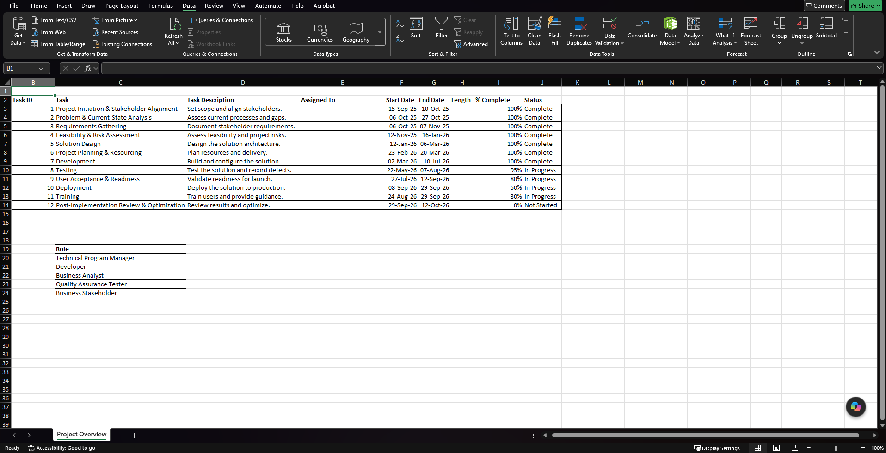
- On the Project Overview worksheet you’ll see project activities that need ownership assignments. You’ll assign these using a drop-down list of project roles. To do this, start by selecting the blank cells under the Assigned To heading.
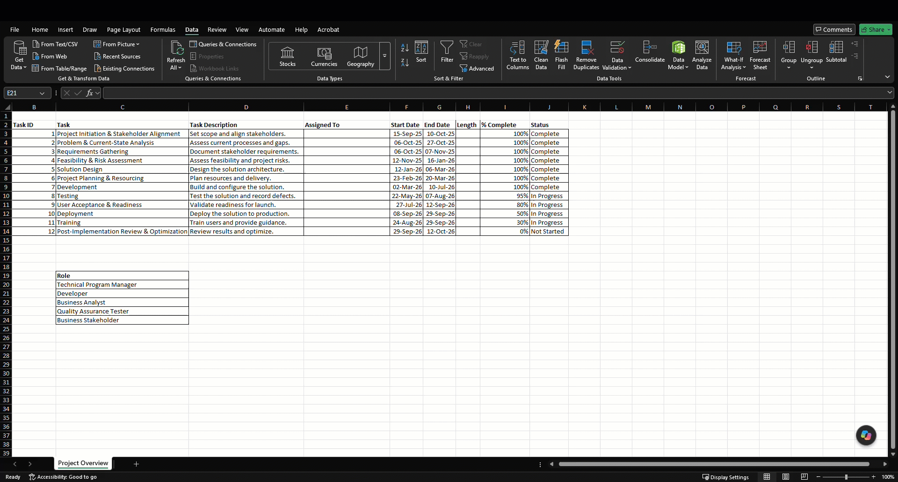
- With those cells selected, navigate to the Data tab on the Excel toolbar, find the Data Tools section, and click on Data Validation.

- In the Data Validation dialog, select List from the Allow drop-down.
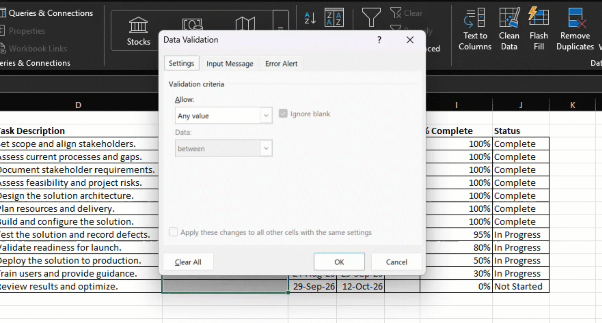
- Click in the Source field. Keeping the Data Validation dialog open, navigate to the Roles worksheet of the workbook and select the cells under the Role header. The Source field populates with the cells you’ve selected.

- Click OK.
- On the Tasks worksheet, the cells under Assigned To now have a drop-down list of roles. For each task, select a role to assign the task to.
Part 2: Managing Task Accountability
To add more nuance to the task assignments, let's create a new Supervising column next to the Assigned To column.
-
Add a new column to the sheet and name it Supervising. This column will be used to assign a supervising role for each task.

-
Using the same method from Part 1, create a drop-down list in the Supervising column using the same source data from the Roles list.
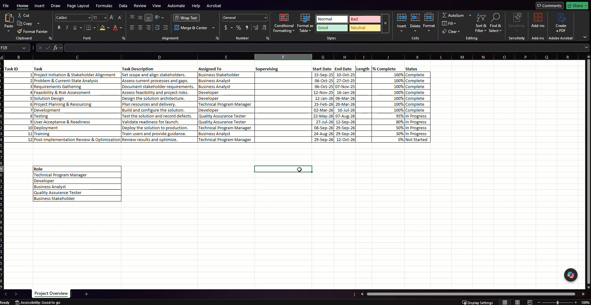
- Assign a supervising role for each task using the newly created drop-list. Consider availability and workload for each role as you plan the assignments for this project.
-
Conditional Formatting can be helpful when reading a worksheet with many rows of data. In this case, we can use conditional formatting to highlight the status of each task. To do this, navigate to the Home tab in the Excel toolbar and select the cells in the Status column. In the Styles section, click on Conditional Formatting and select New Rule from the drop-down menu.

-
In the New Formatting Rule dialog, select Format only cells that contain. In the Edit the Rule Description section, select Specific Text from the first drop-down menu and type Complete in the text field. Click the Format button.

- In the Format Cells dialog, click on Color and select green as the cell fill. Click OK on both the Format Cells dialog and the New Formatting Rule dialog.
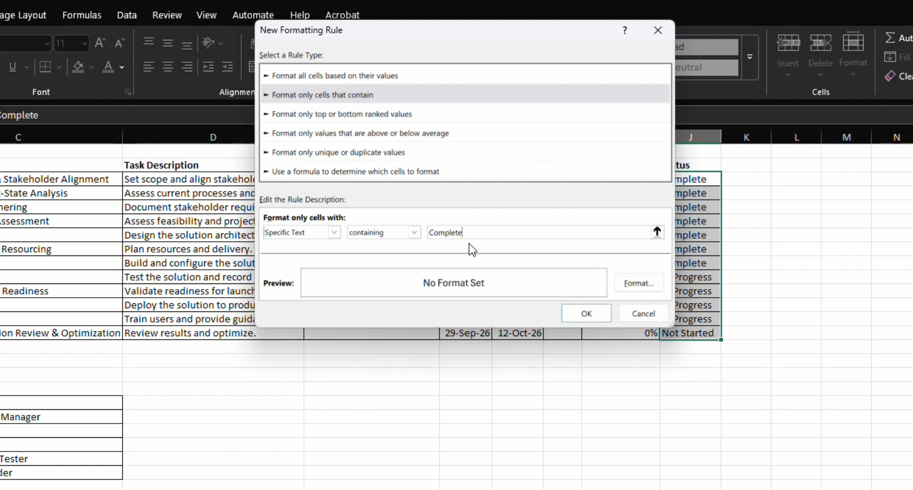
- Repeat the previous steps so that the "In Progress" status turns the cell yellow and the "Not Started" status turns the cell red. When using the formatting rules to format only cells that contain a specific text, any misspellings will not create the proper color change. Fix any errors in the status to make sure each cell is formatted as shown below.
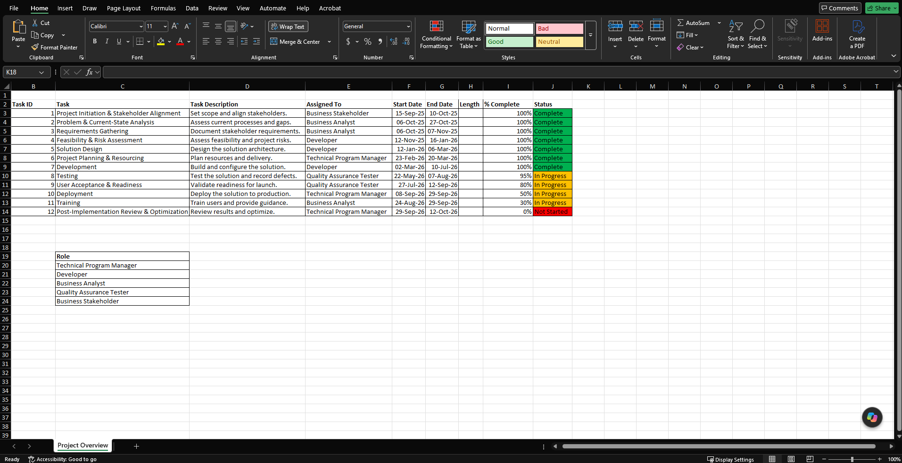
Part 3: Date Validation Questions
Please complete the following additional activities:
- Select all boxes in the % Complete column. On the Home tab in the Excel toolbar, click on Conditional Formatting, then hover over Data Bars. Select a Gradient Fill option.
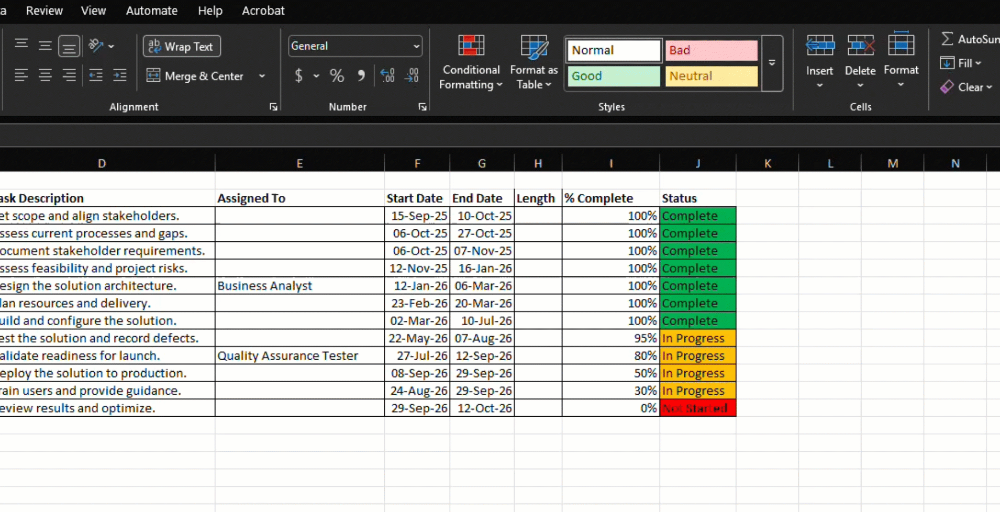
- Use the DATEDIF function to automatically show you the length of each task. In the first line of the table, under Length, enter the following: =DATEDIF(F2,G2,"d"). Be sure to hit enter after you finish typing the formula.
- The equal sign at the beginning tells Excel you’re entering a formula. DATEDIF is a formula that shows the time difference between two dates. Inside the parentheses, the first two values are the cells you want the formula to calculate from, and “d” indicates you want the number in days.
- Click on the cell you entered the formula in and hover over the lower right corner until a plus sign appears, then click and drag down the column to repeat the formula for the rest of the table.

Lab 2: OneNote Foundations for Project Organization
Scenario
You have recently joined a project team responsible for implementing a new enterprise software solution for a healthcare organization. Your project manager has asked you to create and organize a OneNote notebook that will serve as the project's central repository for documentation, requirements, meeting notes, and project planning information.
You will create the project notebook, organize project content, and implement information management techniques that support project execution.
Part 1: Create and organize a OneNote Notebook
Create a New Notebook
- Open Microsoft OneNote.
- Select File > New. You will need to select a folder in your organizations OneDrive to ensure other users can access it.
- Make the new Notebooks name: Enterprise Software Implementation Project.
- Should any pop ups appear asking if you would like to share the Notebook, select Not Now.
Create Sections
Create the following notebook sections. Press enter after typing each name in order to ensure the name is applied.
- Project Overview
- Requirements
- Meetings
- Risks and Issues
- Training

Create Pages
Each section is created with a blank page in it. Title the blank pages or click "Add Page" to create the pages for each section as outlined in this table.

| Section | Pages |
|---|---|
| Project Overview | Project Charter |
| Stakeholder List | |
| Requirements | Functional Requirements |
| Technical Requirements | |
| Meetings | Weekly Meeting |
| Risks and Issues | Risk Register |
| Training | Training Plan |
Part 2: Use and Adapt Templates
Apply a Template
- Navigate to the Meetings section.
- Select Insert > Page Templates. When a template is applied it will create a new page based on the selected template.
- Choose select the Project Overview template. Change the page title to Kick Off Meeting.

Customize the Template
Modify the template to include:
- Agenda
- Attendees
- Objectives
- Action Items
- Decisions Made
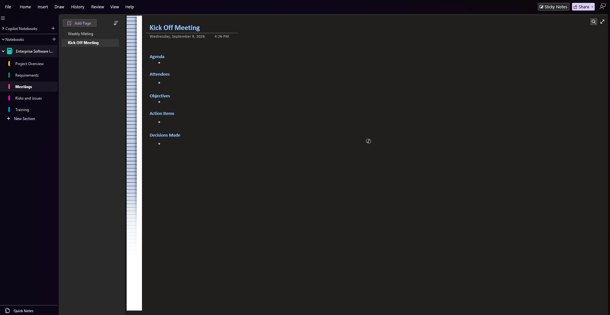
Part 3: Apply Tags and Organize Information
Add Sample Action Items
On the Kick off Meeting page, under Action Items add the following:
- Gather stakeholder requirements
- Complete system design
- Schedule training sessions
- Review project risks
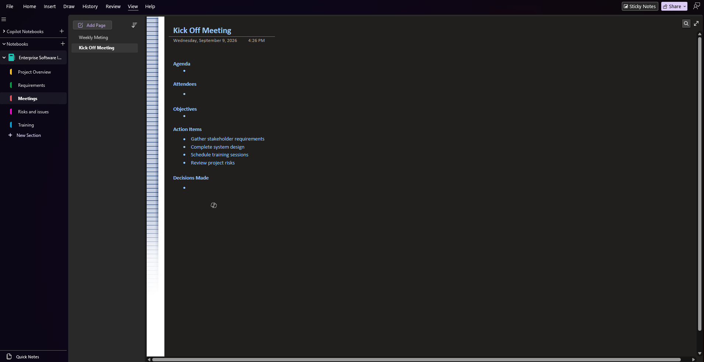
Apply Tags
Tags can be applied to text in OneNote allowing for easy organization and searching. Do this by selecting the bullets in your list and remove them by pressing back space. Then, highlight each row and add a tag as shown in the gif below. Follow the table to see which tag to add to which row.
| Task | Suggested Tag |
|---|---|
| Gather stakeholder requirements | To Do |
| Complete system design | Important |
| Schedule training sessions | To Do |
| Review project risks | Question |
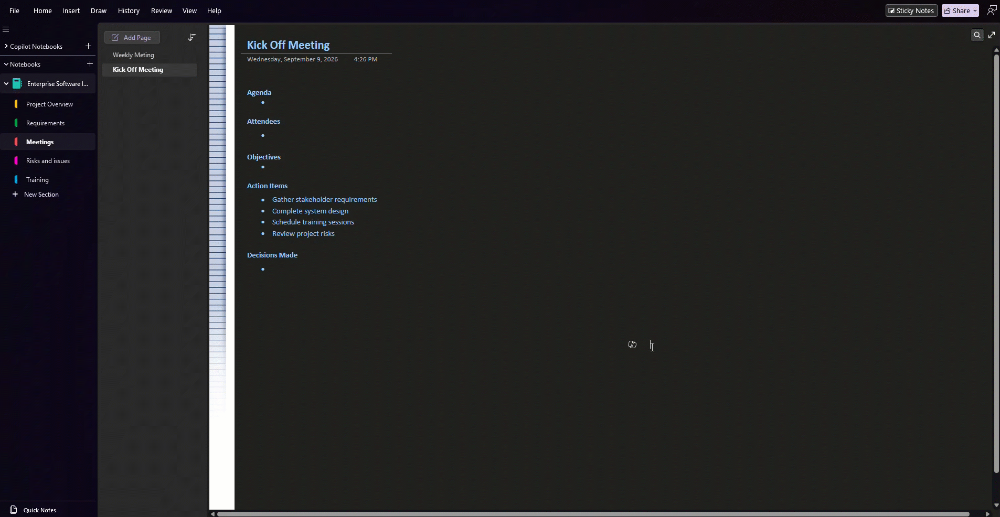
Search by Tag
- Go back to Home on the top menu bar. Click on the three dots, then Find Tags.
- Review the tagged items generated by OneNote.

Lab 3: Project Management in Microsoft Teams Lab
Scenario
You have been assigned as the Technical Program Manager for a healthcare technology implementation project. Your first responsibility is to establish a Microsoft Teams workspace where project team members can collaborate, share documents, track project information, and conduct meetings.
You will create a Team, organize channels, assign permissions, share project documentation, and integrate project management tools.
Part 1: Create a Project Team
Step 1: Open Microsoft Teams
- Launch Microsoft Teams, and ensure you are in the Chat Section.
- Select Teams and channels from the left navigation pane. You may need to select "See all your teams".
- Click Create a Team in the top right corner.
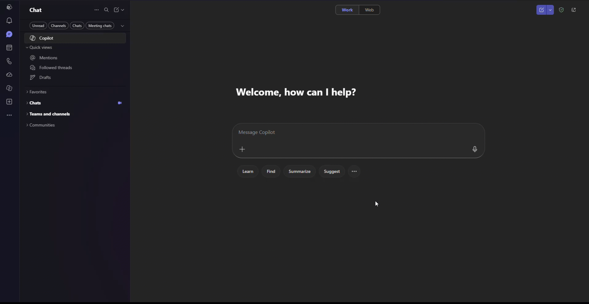
Step 2: Create a Team
- When creating a team there are several templates to choose from. Select From Scratch if it is not automatically selected.
- Name the Team Healthcare Technology Implementation Project.
- Ensure the team is set to Private Team.
- Name your first channel General.
- Click Create.
- Skip adding members for now.
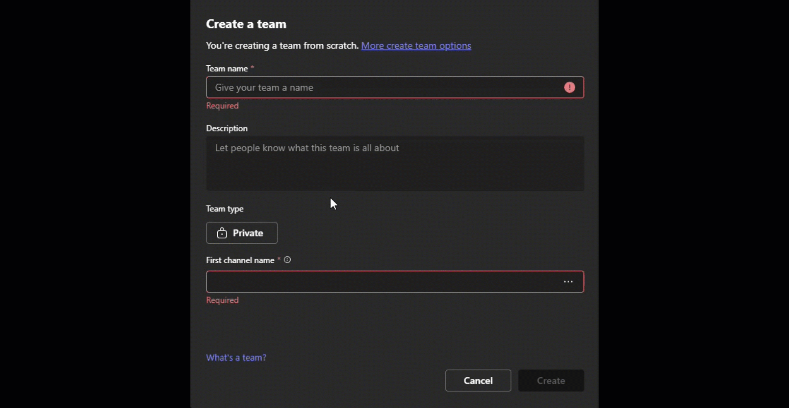
Part 2: Create and Organize Channels
Create Project Channels
When creating a channel you can enter a name and description. Create the following channels with the following descriptions by selecting “…” on your new team, and click Add channel:
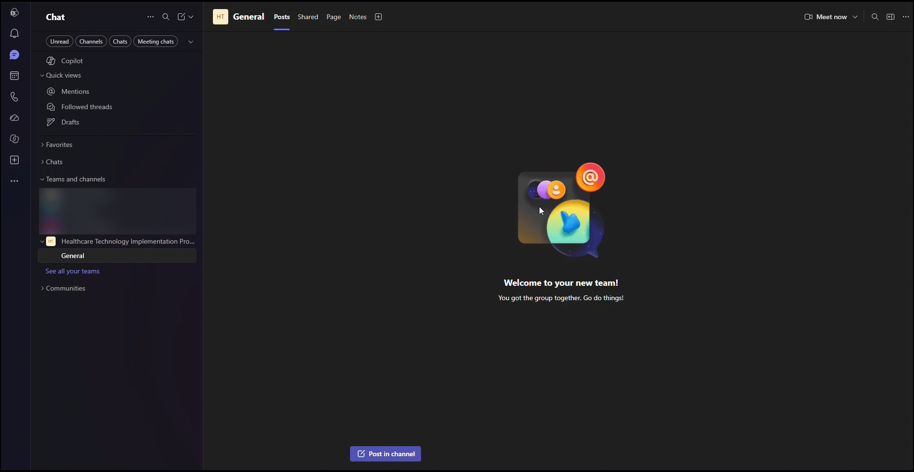
| Channel Name | Description |
|---|---|
| General | Team-wide announcements |
| Project Planning | Schedules, timelines, milestones |
| Requirements | Business and technical requirements |
| Testing and QA | Testing activities and defect tracking |
| Project Risks | Risk management and issue discussions |
Part 3: Configure Permissions and Access
Review Team Roles
Click on the three dots next to your team name and select Manage team, then select the Settings tab to access the various permission and settings of your team.
Review the member permissions to see what they are allowed to do within the team.

Part 4: Project Management Using Teams
Step 1: Configuring Channels
Ensure the Project Planning channel is properly configured as a Posts channel. Click on the "..." to the top right when in the channel, select Edit channel and choose Posts in the pop up window.
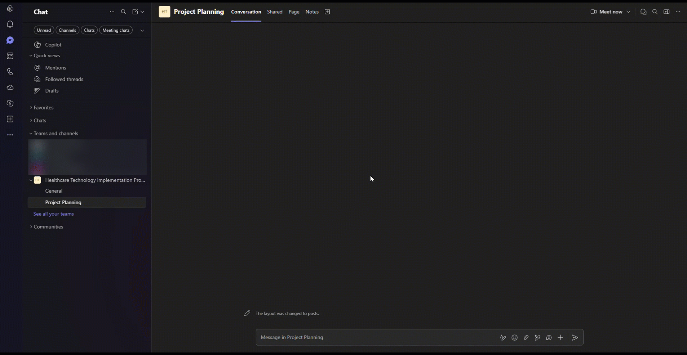
Step 2: Create a Project Status Post
In the Project Planning channel, create a post by clicking Post in Channel at the bottom of the screen. Create a post with the title Project Status Update and the following content:
- Current Status: On Track
- Next Milestone: Requirements Review
- Risks Identified: None
- Upcoming Meeting: Project Kickoff
Step 3: Tag Team Members
A powerful tool in Teams is the ability@mention people that are in the same team by typing @ followed by their name. You can mention yourself, anyone else you've added to your team, everyone in a specific channel or even the entire team. When mentioned the recipient will receive a notification.
Step 4: Pin Important Content
Pin the Project Status Update to the channel. A pinned message or post will be visible at the top of the channel for all members.
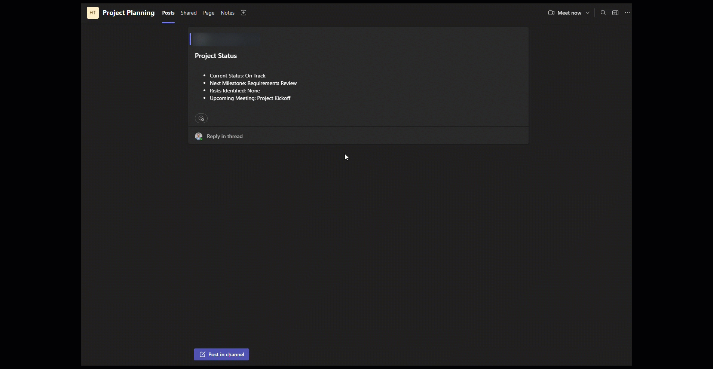
Reflection Questions
- How do Teams channels improve project communication?
- What advantages does document sharing provide compared to email attachments?
- Which Teams feature do you believe is most valuable for project managers and why?
Lab 4: Project Management Closeout Activity
Scenario
You are the Technical Program Manager for a healthcare technology project that is nearing completion. The organization is preparing to transition the system to operational support teams. Throughout the project, documentation has been stored across multiple tools including Teams, OneNote, SharePoint, Excel, and email. Leadership has requested a final review of project documentation before approving project closure.
Part 1: Assess Current Project Documentation
Step 1: Identify Documentation Tools -- Complete the following table:
| Tool | Description | What information is stored there? | What challenges exist within each tool? |
|---|---|---|---|
| Microsoft Teams | |||
| OneNote | |||
| SharePoint | |||
| Excel | |||
Part 2: Identify Common Documentation Pitfalls
Scenario
The project team reports the following issues:
- Documents are stored in multiple locations.
- Several versions of the same file exist.
- The ownership of documents is unclear.
- Meeting decisions are difficult to locate.
- Maintenance staff have limited project knowledge.
Step 1: Match the Issue to the Pitfall
Complete the table:
| Issue | Documentation Pitfall |
|---|---|
| Multiple file versions | |
| Missing ownership | |
| Information scattered across tools | |
| Missing meeting records | |
| Lack of operational knowledge transfer |
Step 2: Recommend Improvements
For each pitfall, recommend a best practice solution.
Part 3: Apply Documentation Best Practices
Step 1: Establish Documentation Standards
Define standards for:
- File naming conventions
- Version control
- Document ownership
- Storage location
- Approval process
Part 4: Prepare Project Closeout Documentation
Scenario
Leadership has approved project completion pending final documentation.
Step 1: Create a Project Closeout Report Outline
Include:
- Project Overview
- Project Objectives
- Deliverables Completed
- Budget Summary
- Schedule Performance
- Risks and Resolutions
- Lessons Learned
- Stakeholder Sign-Off
Step 2: Document Lessons Learned
Identify:
- One success
- One challenge
- One recommendation for future projects
Step 3: Obtain Project Sign-Off
Determine which stakeholders should approve project closure.
Examples:
- Business Stakeholder
- Project Manager
- Business Owner
- Operations Manager
Part 5: Create a Maintenance and Operational Handoff Package
Scenario
The project is transitioning to an operational support team.
Step 1: Create a Handoff Checklist
Include:
- System Documentation
- User Guides
- Support Procedures
- Maintenance Schedule
- Escalation Procedures
- Known Issues Log
Step 2: Assign Ownership
Complete the table:
| Deliverable | New Owner |
|---|---|
| Maintenance Procedures | |
| User Support | |
| System Updates | |
| Incident Management | |
| Vendor Coordination |
Step 3: Verify Knowledge Transfer
Identify activities that should occur before project closure:
- Training sessions
- Documentation review
- Operational walkthrough
- Support readiness assessment
Reflection Questions
- Why is project documentation critical to project success?
- Which documentation tools were most effective and why?
- Why are lessons learned valuable for future projects?